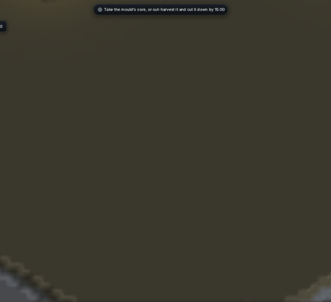

<title>Build Anywhere</title>
<meta name="claude:viewport-fit-sides" content="cover">
<style>
/* One column: the clip on top, its counts beside it, then what changed. */
:root {
  --bg: #f3f1ec; --fg: #23251f; --muted: #6a6c62; --line: #d9d6cc; --panel: #fbfaf6; --accent: #6b7d3a;
  --display: "Space Grotesk", system-ui, sans-serif; --body: "Inter", system-ui, sans-serif; --mono: ui-monospace, "SFMono-Regular", Menlo, monospace;
}
@media (prefers-color-scheme: dark) { :root:not([data-theme="light"]) { --bg: #191a16; --fg: #e8e7e0; --muted: #a3a497; --line: #34362e; --panel: #20221c; --accent: #a9bf6a; color-scheme: dark } }
:root[data-theme="dark"] { --bg: #191a16; --fg: #e8e7e0; --muted: #a3a497; --line: #34362e; --panel: #20221c; --accent: #a9bf6a; color-scheme: dark }
body { background: var(--bg); color: var(--fg); font-family: var(--body); line-height: 1.55; padding-block: 28px 48px; padding-left: max(16px, env(safe-area-inset-left, 0px)); padding-right: max(16px, env(safe-area-inset-right, 0px)); }
main { max-width: 980px; margin: 0 auto; display: grid; gap: 22px; }
h1 { font-family: var(--display); font-size: 1.9rem; margin: 0; text-wrap: balance; }
h2 { font-family: var(--display); font-size: 1.15rem; margin: 0 0 6px; }
p { margin: 0; max-width: 68ch; }
.lede { color: var(--muted); }
.clip { display: grid; grid-template-columns: minmax(0, 560px) minmax(0, 1fr); gap: 20px; align-items: start; }
.clip img { width: 100%; border-radius: 6px; border: 1px solid var(--line); display: block; }
.cap { font-size: 0.85rem; color: var(--muted); margin-top: 6px; }
table { border-collapse: collapse; font-variant-numeric: tabular-nums; font-size: 0.92rem; width: 100%; }
th, td { text-align: right; padding: 4px 8px; border-bottom: 1px solid var(--line); }
th:first-child, td:first-child { text-align: left; }
th { font-weight: 600; color: var(--muted); font-size: 0.8rem; letter-spacing: 0.04em; text-transform: uppercase; }
ul { margin: 0; padding-left: 1.2em; display: grid; gap: 6px; max-width: 72ch; }
code { font-family: var(--mono); font-size: 0.88em; }
.box { background: var(--panel); border: 1px solid var(--line); border-radius: 6px; padding: 14px 16px; }
@media (max-width: 720px) { .clip { grid-template-columns: 1fr; } }
</style>
<link rel="stylesheet" href="https://fonts.googleapis.com/css2?family=Inter:wght@400;600&family=Space+Grotesk:wght@600&display=swap">
<main>
  <header>
    <h1>Build anywhere</h1>
    <p class="lede">From your playtest note: order a building anywhere on the map, a soldier walks there by itself, and a faint ghost with a filling bar and a countdown shows until it stands.</p>
  </header>

  <section class="clip">
    <div>
      
      <p class="cap">The Fork, seed 1, 2 to 14 game seconds, a still camera at zoom 14. At about 3 s a turret is ordered halfway to the core and a short wall in front of it, both out of every soldier's range, with nobody selected.</p>
    </div>
    <div class="box">
      <h2>How built, by second</h2>
      <table>
        <thead><tr><th>Game s</th><th>Turret</th><th>Wall</th></tr></thead>
        <tbody>
          <tr><td>5</td><td>0.0</td><td>0.1</td></tr>
          <tr><td>7</td><td>0.2</td><td>0.3</td></tr>
          <tr><td>9</td><td>0.5</td><td>0.6</td></tr>
          <tr><td>11</td><td>0.7</td><td>0.8</td></tr>
          <tr><td>13</td><td>1.0</td><td>1.0</td></tr>
        </tbody>
      </table>
      <p class="cap">One builder each, 8 s a building (<code>BuildRules::raise</code>). The label reads "on the way" while the builder walks, then counts down the seconds left.</p>
    </div>
  </section>

  <section>
    <h2>What changed</h2>
    <ul>
      <li>A building can go anywhere on open ground. The old "no soldier in range" refusal is gone (<code>BuildRules::anywhere</code>, on).</li>
      <li>With soldiers selected, they go and build it, as before. With none selected, the nearest idle soldier goes. If nobody is idle, the nearest busy one goes and returns to its old order once the building stands (<code>Cmd::Send</code>).</li>
      <li>A ghost is faint all over until it is finished: the unbuilt part at a quarter, the risen part at 60%, full once it stands.</li>
      <li>Under it, a bar as wide as the building fills as it rises, with "on the way", "no builder" or the seconds left beside it. A wall ghost, which used to be invisible, is now a dashed line with the same bar.</li>
      <li>Builders stand at the building's edge instead of on top of it, so you can see it rise.</li>
    </ul>
  </section>
</main>
